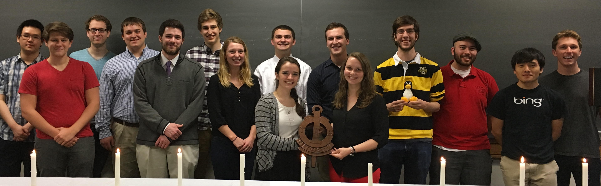
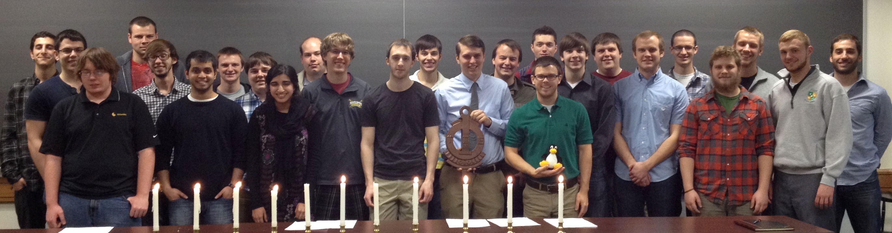
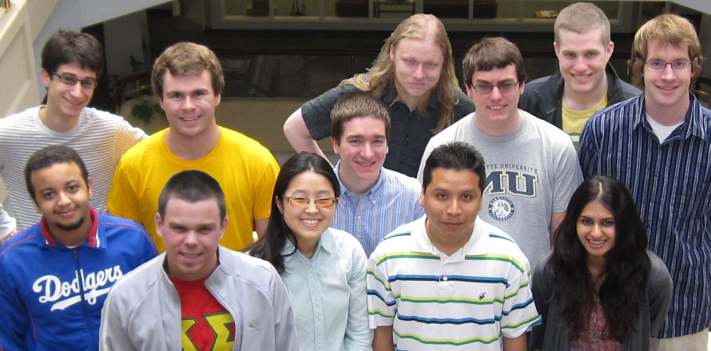

About UPE
UPE was first organized at Texas A&M University, College Station,
Texas, in 1967. The international organization now consists of
chapters in various colleges and universities in North America and
overseas.
The mission of UPE is to recognize academic excellence at both the
undergraduate and graduate levels in the Computing and Information
Disciplines.
UPE has received endorsements from the two largest professional
computing organizations in the world,
the
Association for Computing
Machinery (ACM) and the
IEEE
Computer Society (IEEE-CS).
The Marquette chapter of UPE was chartered in 2001, and inducts qualified
students from the computer science and computer engineering majors.
UPE is hosting open laboratory/tutoring for those who would like some additional help with their programming homework.
More information found here.
Spring 2017

The Spring 2017 Initiation. Pictured, from left to right:
Casey O'Hare (outgoing president),
Carissa Roberts (outgoing treasurer),
Kevin Roberts,
Austin Paul,
David Hunpatin,
John Halloran,
Julia Beilke (outgoing VP),
Jacob Kaphingst,
Charles Morley,
Ryan Thomas,
Kathleen Baert,
Matthew Kinzler,
Jason Wallenfang,
Jared Funk,
Alex Gattone (incoming VP),
Priya Bansal,
David Newman,
Shivam Thakrar,
Shivani Kohli (incoming treasurer),
Patrick Mcgee, and
Timothy Buente.
Not pictured: Marielle Billig (incoming president), Anna Bell Lansdowne, Christopher Procak.
Spring 2016

The Spring 2016 Initiation. Pictured, from left to right:
Phuc Nguyen, Casey O'Hare (outgoing VP, incoming president), Samuel Newberry, Jacob Kaphingst,
Nathan Arpin, Justin Miller, Julia Beilke (incoming VP), Ryan Thomas, Marielle Billig,
Colin Quinn, Carissa Roberts (treasurer), John Halloran,
Tux -- standing in for Jakob Horner,
Robert Krause, Seng Ye Xiong, Jason Arnold (outgoing president).
Not pictured: Dakota Sullivan, Matthew Putaraksa.
Spring 2014

The Spring 2014 Initiation. Pictured, from left to right:
Alexander Calfo, David Savoia, Steven Goodman, Matthew Solfest,
Benjamin Buckley, Devansh Saxena,
Robert Gries, Jacob Chitel,
Nida Hafeez, Matthew Friedman, Jacob Dahleen, Alex Hunsberger (outgoing VP),
Chris Pivonka,
Jake Cohen (outgoing president), Jacob Anderson,
Jack Batzner (outgoing treasurer, holding Tux), Ryan Vogt, Andrew Hill,
Dan Polfer (incoming VP),
William Braden, Gregory Merkel, Ryan Naugle (incoming treasurer), Sean Robinson,
Christopher Mojek, Nick McMillan (honorary inductee, COSC '08).
Not pictured: Farzeen Harunani (incoming president.)
Spring 2013

The Spring 2013 Initiation. Pictured, from left to right:
Kaleb Breault, Alex Hunsberger (incoming VP), Jacob Dahleen, Andrew Kirkham,
Chris Lewis (honorary inductee), Leland Warren, Jake Cohen (outgoing VP, incoming president), Paul Kulander, Tyler Much, Chris Sabin (outgoing president),
Jack Batzner (incoming treasurer), Jacob Anderson, Kyle Persohn,
Tux -- standing in for Alex Becherer, Artem Azarenko, Chris Pivonka,
Paul Kaefer, Ryan Vogt.
Spring 2012

The Spring 2012 membership. Pictured, from left to right: Kyle Persohn,
Farzeen Harunani, Mike Ziwisky, Chris Sabin (incoming president),
Jack Batzner (outgoing VP), Jake Cohen (incoming VP), Jahnavi Acharya
(outgoing president, incoming treasurer),
Tux -- standing in for Mike Chimienti, Clyde Hoffmann (outgoing treasurer),
Alex Hunsberger, Paul Hinze (alumni honoree), Corey Bost, Matt Bajzek,
Nick Yogerst, Johnny Fandel, Matt Beine.
Spring 2011

The Spring 2011 membership. Pictured, back row from left to right: Casey O'Brien (outgoing VP), Matthias Koehler, Dustin Venske.
Middle row: Clyde Hoffmann (outgoing president, incoming treasurer), Paul Kaefer, Matt Beine, Kyle Neuschaefer (outgoing treasurer).
Front row: Nasser AlMatar, Jack Batzner (incoming VP), Sei Jung Kim, Victor Blas, Jahnavi Acharya (incoming president).
Not pictured: Paul Kulander.
Spring 2010

The Spring 2010 membership. Pictured, from left to right: Oscar Goh, Casey O'Brien (incoming VP), Matt Strong (outgoing
VP), Jason Fong, Adam Koehler, Clyde Hoffmann (incoming president), Kyle
Neuschaefer (incoming treasurer), Fran Hurtado (outgoing treasurer), Paul
Spillane, Andrew Fearson, John Fandel, Nicholas Yogerst. Not pictured:
Kristine Manning, Gabe Van Eyck (outgoing president).
Spring 2009

The Spring 2009 membership. Pictured, from left to right: Mike
Schultz, Oscar Goh, Brian Arnold, Adam Mallen, Joshua Peterson, Aaron
Gember, Ben Sturm, Gabe Van Eyck, Matt Netkow, Tim Blattner, Matt
Strong, Greg Jacobs, and Ian Obermiller. Not pictured: Fran Hurtado.
March 2009: Delegation from Marquette's UPE chapter attends the Annual Convention and Abacus Awards in Chattanooga, TN, and presents a chapter report.